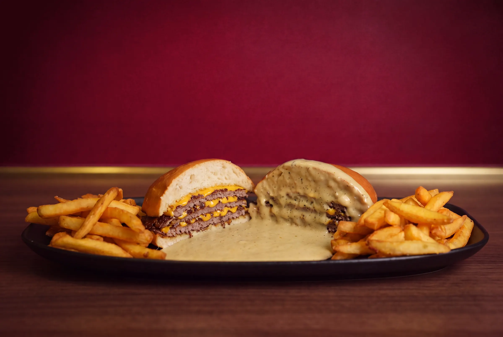
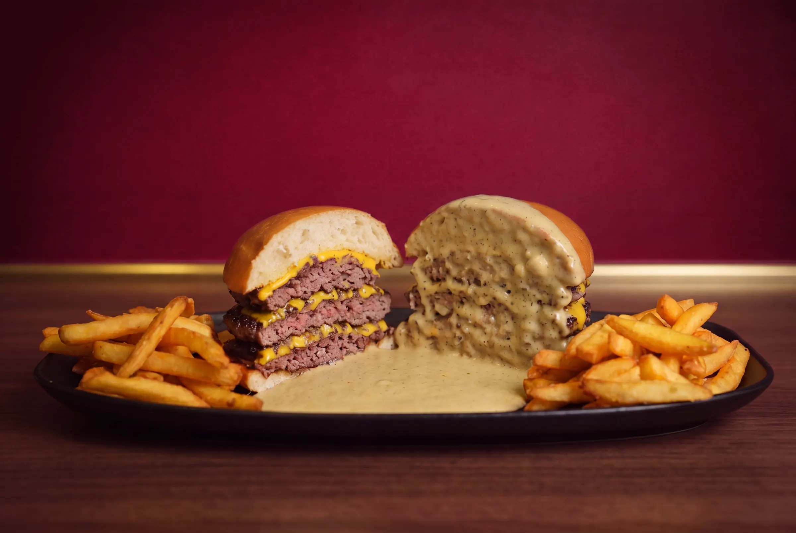
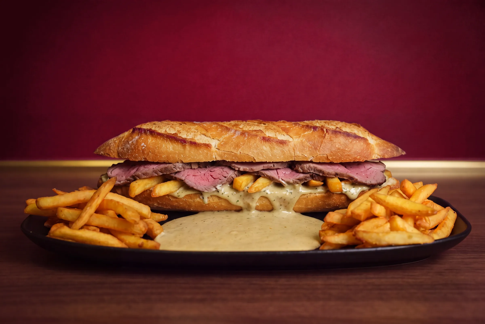
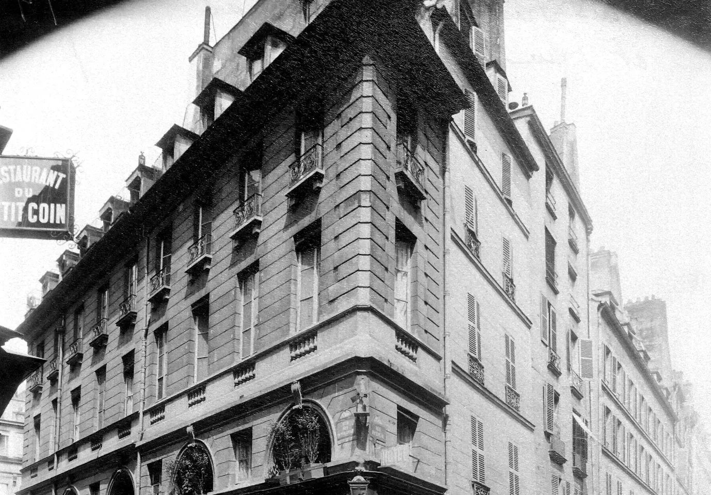
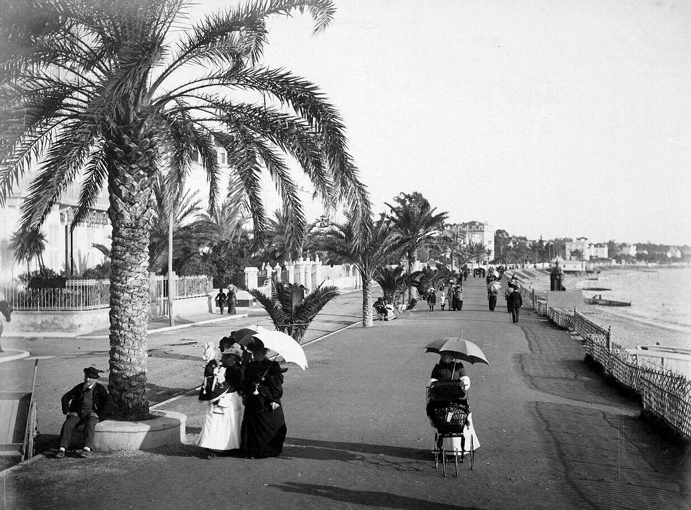
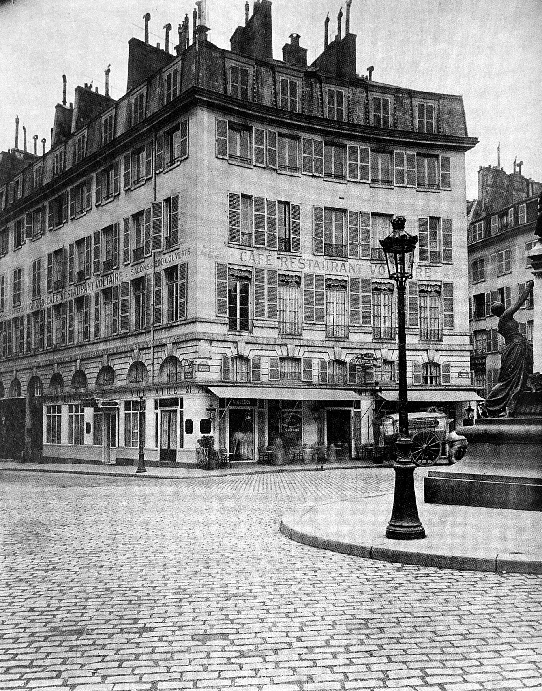

Genève
Ouverture le 27 novembre
APB du Lac. Commandez en ligne et passez prendre votre burger, ou installez-vous.
- Adresse
- Au bord du lac (adresse exacte à confirmer)
- Horaires
- À confirmer

La sauce Café de Paris, travaillée à Paris depuis le début des années 1980.
Une boule de bœuf, écrasée d'un coup sur la plancha. La croûte se fait en quelques secondes.
Le cheddar posé sur la viande encore brûlante, puis le pain.
En deux, au couteau. Pour qu'il aille dans la sauce.
La Café de Paris, travaillée à Paris depuis le début des années 1980.
Une sauce, trois façons de la servir. Toujours coupé, toujours posé dedans.



Une recette née dans la tradition des grandes sauces d'entrecôte, travaillée à Paris, transmise jusqu'à nous.
XXe siècle
La tradition des grandes sauces d'entrecôte naît entre les deux villes, avant de trouver à Paris sa propre identité.

Début des années 1980
Introduite et travaillée à Paris, elle est servie à L'Entrecôte Café de Paris, notamment rue Feydeau.

Plusieurs décennies
Rue Feydeau, rue de Ponthieu, rue François-Miron, puis Cannes. Transmise, affinée, perfectionnée.

Une tradition partagée
Nous ne revendiquons pas l'origine de la sauce. Nous assurons la continuité d'une interprétation parisienne, construite dans le temps.

« Inspirée par la tradition, élevée à l'excellence depuis plus de quarante ans. »
Aujourd'hui, Atelier Paris Burger lui donne deux formats d'aujourd'hui : le burger et la baguette.
Trois villes, une seule sauce. Choisissez la vôtre.
Ouverture le 27 novembre
APB du Lac. Commandez en ligne et passez prendre votre burger, ou installez-vous.
Au port
Aujourd'hui, le Patron, d'origine phénicio-libanaise, revient à ses origines et ouvre son premier restaurant en Espagne, sur l'île d'Ibiza.
En livraison
La carte d'Atelier Paris Burger, livrée chez vous.
Le 27 novembre, à Genève, nous offrons 200 burgers. Réservez le vôtre et choisissez votre heure : un QR code arrive par e-mail.
Dans votre téléphone, sans application. Un tampon à chaque passage, le dixième burger offert.